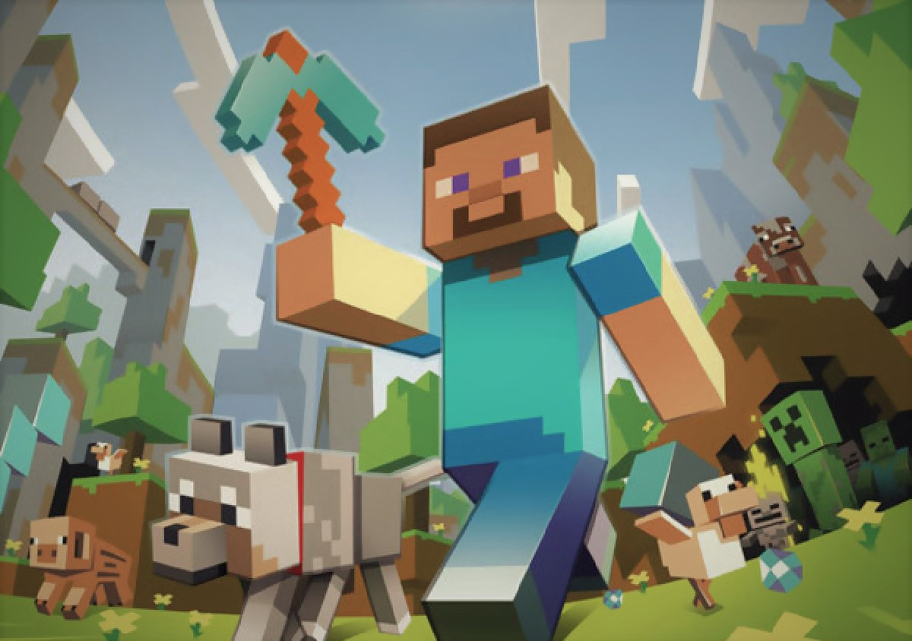

Minecraft (от англ. mine — «шахта», «добывать» и англ. craft — «ремесло») — компьютерная инди-игра в жанре песочницы с элементами симулятора выживания и открытым миром, разработанная шведским программистом Маркусом Перссоном, известным также как «Notch» (Нотч), и позже выпускаемая основанной им компанией Mojang. Перссон занимался разработкой Minecraft с 2009 года. Портированием и поддержкой версий игры для игровых консолей занималась британская компания 4J Studios. В 2014 году компания Mojang и права на Minecraft были приобретены американской компанией Microsoft.